開催概要
事前に全戸配布済み。当日の各プログラム景品等でも配布。
当日は半券を切るよう適宜アナウンスすること。
準備期間の担当割（案）
| 担当業務 | 担当者（◎＝主担当） |
|---|---|
| 演目補助・部外補佐関連 | 稲田（学生ボラ）、徳山・斉田（青年部） |
| ボランティア統括 | 中山（撮影）、草野（取材）、東（動画・ドローン） 要ボランティア |
| アテンド | 有馬（前日駐車場・警備員・青年部）、有賀（各出演者・犬）、倉永（来賓） |
| 駐車場・搬入出 | ◎中山（デザイン・発注）、渡邊（看板類）、川畑（サイン類） ◎稲田（XX年はふるまい補佐） |
| 文書・資料作成 | ◎川畑（文書・要項）、稲田（文書）、中山（メール）、井崎（会場図）、有賀（台本） |
| 広報物製作・広報 | ◎徳山・井崎・斉田・川畑 要ボランティア → BOXへ |
| ステージ演目・出演者関係 | ◎倉永（来賓・基地）、緒方（演者）、有賀（犬猫）、稲田・草野 いずれも立案兼務 |
| 一般出店者関連 | ◎緒方・中山（名簿）、川畑（説明会） |
当日担当割（案）
| 担当業務 | 担当者（◎＝現場統括） |
|---|---|
| 全体統括（官公対応含） | ◎倉永 |
| 現場統括・運営全般 | ◎渡邊（現場統括）、中山（広報製作）、緒方（出店者）、川畑（運営全般） |
| 本部・MC補佐 | 倉永、◎緒方、有賀、渡邊（防災救護兼）、稲田 |
| 協賛・ロゴ回収 | ◎倉永、東 |
| なりきり選手権 | ●●・●●（企画立案）、●●・●●（SNS/募集） |
プログラム・当日フロー
各レース1・2位 → 祭り商品券各500円（計12,000円分）
参加賞：抽選券×全員
準備：ラムネ60本・テーブル2台・バケツ・雑巾・ゴミ袋・ブルーシート
なりきり選手権 出場者受付・出場順くじ引き・音源確認
上位3名：祭り商品券1,500円・1,000円・500円（計2,000円分）
参加賞：抽選券×全員
審査員8名（役場井下課長・ヴィアマ選手2名・倉永実行委員長・町議松浦・商工会川野会長・ボラ高校生2名）
景品：参加賞商品券2,000円×10組 / 審査員特別賞2組×Amazonギフト5,000円 / 上位3名10万・3万・1万
音源：CDまたはBluetooth接続（舞台袖）
テゲバ特別賞（サイン入りボール等）/ ヴィアマ特別賞（サイン入りグッズ）
机3台・各種景品・目録・抽選券・1位2位3位ボード
前方はキッズエリア（小学生以下）のみ・ロープで仕切る
商工会青年部にせんぐまき補助を依頼 / 菓子箱×10個
開催変更・中止について
| 状況 | 対応 |
|---|---|
| 雨天 | 予定通り開催 |
| 荒天 | 主催者判断で中止 イベント前日 午前6時に判断 |
| その他やむを得ない事象 | 主催者が開催困難と判断した場合は中止 |
実行委判断による中止の場合、支払い済みの出店料金は返金。ただし出店準備費・交通費等は事務局負担外。
商品券について
各プログラムの賞品として商品券を配布（当日のみ使用可）。金額はプログラムにより異なる（500円〜1,500円）。
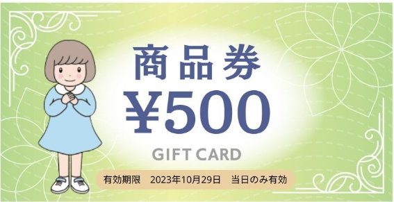
イベント終了後 17:00 までに運営本部にて換金。必ず釣り銭を用意しておくこと。
スケジュール & 人員配置
| 日時 | 内容 | 備考 |
|---|---|---|
| XX月XX日（土） 15:00〜18:00 |
前日準備 | 各出店者のみ入場可 |
| XX月XX日（祝） 7:00〜8:00 |
当日準備 | 6時集合。出店者1台のみ入場可 |
| 9:00〜16:00 | イベント本番 | 8:30までに車両搬出完了 |
| 17:00〜19:30 | 撤収 | 車両搬入は 16:30 以降 |
人員配置（駐車場・誘導）
● 井崎・稲田・有賀 → 7:45ごろにボラ対応へ
● 緒方 → ピーク越え次第、本部へ
● 青年部 → ピーク越え次第、1〜2人を残してブース準備へ
● 東・青年部1〜2人・役場4人 → 8時半ごろまで
搬入図
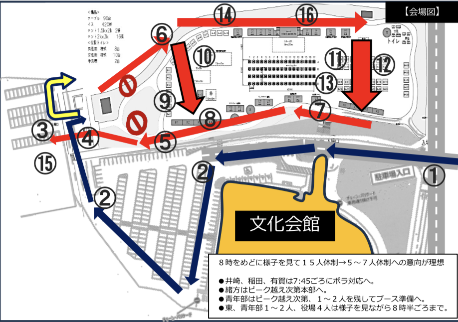
会場誘導図
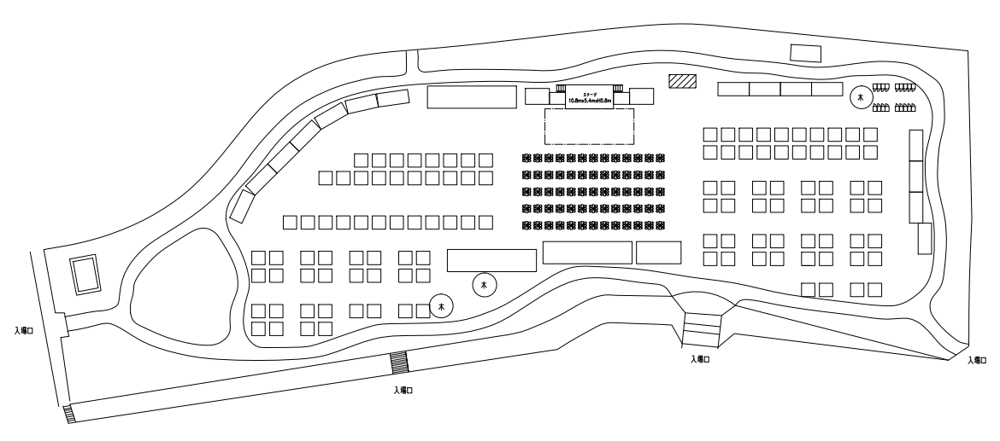
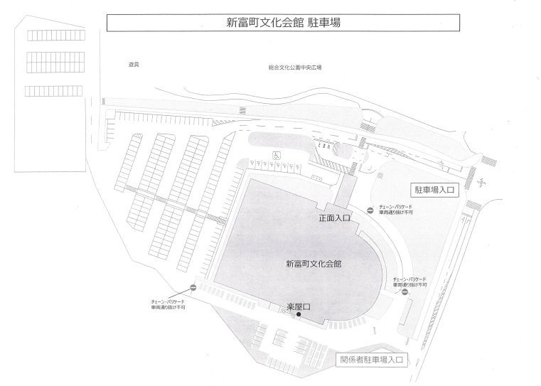
全体レイアウト & 駐車場配置
スタッフ駐車場 → きらり横
警備員配置 → 8:00〜17:30（休憩含）
| ① メイン入場口 | ② アンケート |
| ③ スタッフ控室 | ④ 運営本部 |
| ⑤ ステージ | ⑥ 音響 |
| ⑦ 出演者控室（なりきり・ダンス） | ⑧ 仮設トイレ |
| ⑨ キッチンカー | ⑩⑫ 一般出店者 |
| ⑪ テラス席 | ⑬ 行政・地域団体 |
| ⑭ 高城プロレスリング |
全体レイアウト図
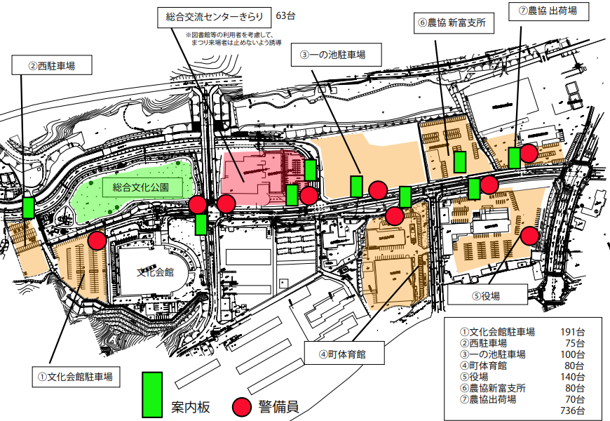
駐車場・警備員配置図
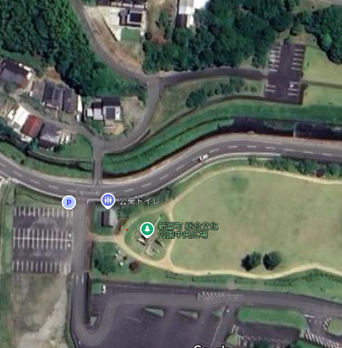
補足図
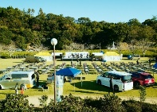
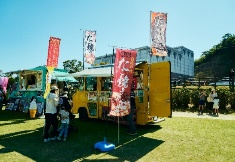
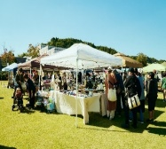
出店者配置図
ステージ起点に西側・東側で区分
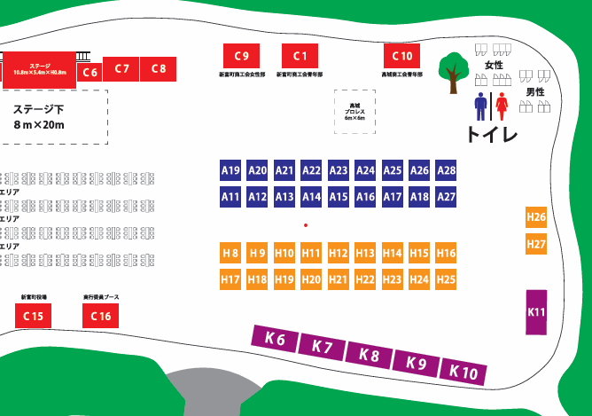
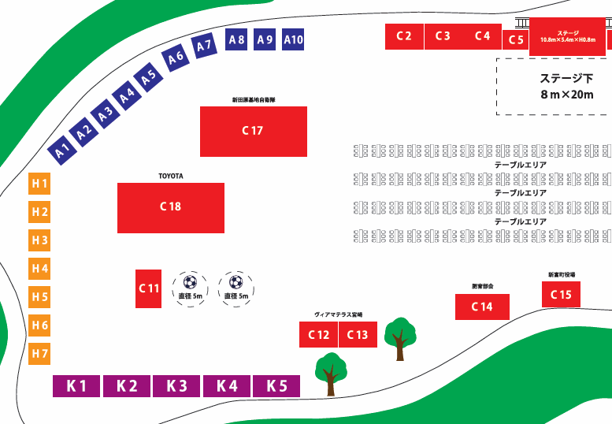
出店者一覧 & 当日ブース案内
キッチンカー → 先着順に奥から誘導（K1、K2…）
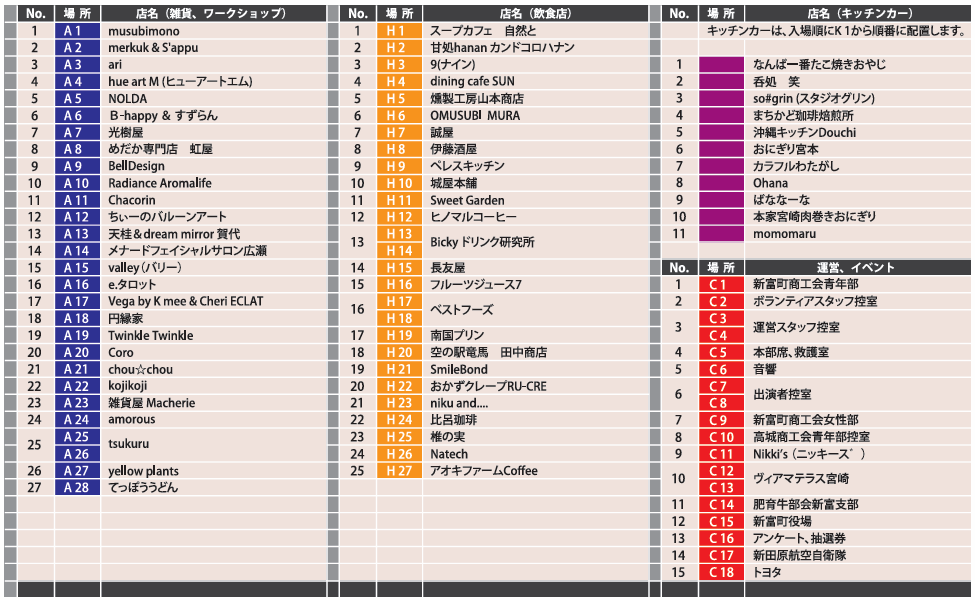
来場者による撮影対応方針
「まつりしんとみ」開催中、実行委・撮影スタッフが撮影する写真・動画の著作権は実行委に帰属し、必要と判断した用途にのみ使用することを基本方針とする。
- 安全な会場運営の妨げとなるような行為
- 長時間にわたって多くの来場者の視線を妨げる行為
- 脚立等により他来場者の安全を妨げる行為
- 執拗なフラッシュ撮影など出演者の迷惑となる行為
上記以外でも運営に支障をきたすと委員長が判断した場合は個別に注意する。
実行委員会 連絡先一覧
| 役職 | 氏名 | 連絡先 |
|---|---|---|
| 実行委員長 | 倉永 | 090-4344-9098 |
| 副実行委員長 | 緒方 | 080-5133-1673 |
| 事務局長 | 井崎 | 090-6765-5631 |
| 委員 | 中山 | 080-1775-4538 |
| 委員 | 徳山 | 090-8768-9456 |
| 委員 | 有賀 | 080-5462-8462 |
| 委員 | 川畑 | 社: 090-5730-0451 私: 080-1795-5533 |
| 委員 | 渡邉 | 080-5242-1718 |
| 委員 | 有馬 | 090-1165-5892 |
| 委員 | 稲田 | 090-1342-9129 |
| 委員 | 草野 | 090-1081-7965 |
| 委員 | 斉田 | 090-8667-3577 |
| 委員 | 東 | 090-8664-5658 |
ボランティア（高校生）対応
担当：稲田・井崎・徳山・斉田
- ステージ周り補佐全般
- トイレットペーパーの定期確認
- おとみ引率（徘徊時）
- 会場見回り
- 風船づくり作業
- 整理券配布
- アンケート配布
- その他必要に応じて
関係者駐車場 割り振り
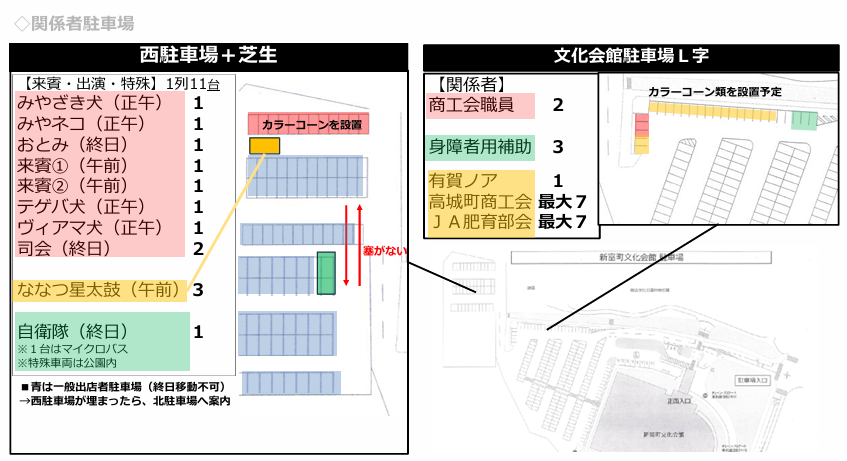
香盤表（タイムスケジュール）
臨機応変に対応すること
| 時刻 | 内容 / 演目 | 担当 | 備考 |
|---|---|---|---|
| ◆ 前日準備（XX月XX日・土） | |||
| 15:00〜18:00 | 前日準備・出店者搬入 | — | 各出店者のみ入場可 |
| ◆ 当日 朝（XX月XX日・祝） | |||
| 6:00 | 実行委・青年部 集合 / 誘導準備 | 全委員 | 各自誘導灯を持って担当位置へ |
| 7:00〜8:00 | 搬入 / ななつ星太鼓 搬入 | 全委員 | 8時半までに車両搬出完了 |
| 7:30 | 学生ボランティアスタッフ 集合 | 稲田 | |
| 7:50 | 風船膨らませ開始（最低5人：注入1・縛り3・紐通し1）/ 司会 集合・最終打合せ | 井崎・徳山・稲田 | 風船300個 |
| 8:00 | 和太鼓 ステージ下セッティング・リハーサル開始 | 倉永・有賀 | |
| 8:30 | 搬入車両 撤収完了 / 高鍋高校ラグビー部員30名 到着 | 中山・東・青年部 | 誘導灯を中山が回収し本部へ |
| 8:40 | 肥育部会 整理券配布スタート / 15分前影アナ | 肥育部会 | |
| 8:45 | ラムネ早飲み エントリー開始（先着60名・整理券） | 川畑・渡邉・稲田 | 小学生以下48名・中学生以上12名（1〜48番 / 49〜60番） |
| ◆ 本番（9:00〜16:00） | |||
| 9:00 | ①オープニングパフォーマンス「ななつ星太鼓」（ステージ下） | 全員 | 肥育部会 肉振る舞いスタート / ラムネ整理券配布（本部） |
| 9:15 | ②開会式（司会ステージIN / OPパフォーマー紹介 / 司会者挨拶） | 倉永・有賀 | 風船配布開始（ラグビー部員30名×5個、ボランティア30名×5個） |
| 9:20 | 関係者挨拶（①実行委員長 倉永佳祐 ②産業振興課長 井下喜仁 ③商工会会長 川野としひろ） | 倉永（来賓誘導） | 風船300個 来賓挨拶開始と共に配布スタート |
| 9:25 | ③風船飛ばし | 来賓3名・倉永・有賀 | 来賓3名＆司会2名「スタート！！」の掛け声 |
| 9:30 | 注意事項アナウンス / 肥育部会ふるまいスタート | 倉永 | |
| 9:35 | ④町民ダンス発表会 前半（3組） | 稲田・草野 | A:エイサー16名 / B:ラディアンス宮崎7名 / C:REP Miyazaki12名 |
| 10:30 | ⑤プロレス 前半戦（外部会場）/ ラムネエントリー締切 | 渡邉・ラグビー部員 | ステージ上での催しなし / この頃に肥育部会ふるまい終了・肉販売スタート |
| 10:45 | ラムネ早飲み 集合（整理券番号順） | 川畑・渡邉・稲田 | |
| 11:00 | 全国大会出場・募金呼びかけ（富田小バレー部 / 高鍋高校ラグビー部 ハカ披露） | 倉永 | ステージ後方にラムネ早飲み用テーブル設置 |
| 11:15 | ⑥ラムネ早飲み選手権（5人×12レース） | 川畑・渡邉・稲田・学生ボラ | 小学生以下8R / 中学生以上3R / ラグビー部3人＋ヴィアマ2人1R｜各レース1・2位→商品券500円×24名=12,000円分 |
| 11:30 | キャラクター 会場到着 | 有賀 | みやざき犬・おとみ・みやねこ・てんてん・ジャーロ君 |
| 12:10 | ⑦テゲバ試合宣伝・キャラクターショー / なりきり選手権 出場者受付 | 倉永・有賀・中山 | みやざき犬サンバレクチャー・フォトタイム｜なりきり出場順くじ引き・音源確認 |
| 12:30 | なりきり選手権 受付（前半組：13:15集合 / 後半組：13:45集合） | 緒方・井崎・川畑・渡邉・稲田 | 出場順決定・音源をシェビーさんに共有・導線確認・審査基準共有 |
| 12:40 | ⑧町民ダンス発表会 後半（2組） | 稲田・草野 | D:セミコン12名（マイク1本使用）/ E:ベルデザイン40名 |
| 12:45 | 紙ヒコーキ 出場者集合（ステージ後ろに机設置） | 井崎・徳山・斉田・稲田 | |
| 13:10 | なりきり選手権 前半組 集合 | 緒方・川畑・渡邉・稲田 | |
| 13:15 | ⑨紙ヒコーキ飛ばし選手権＆プロレス後半戦（同時開催） | 井崎・稲田・学生ボラ | 低学年（小3以下）6人×3R / 高学年（小4以上・大人）6人×2R｜上位3名1,500円・1,000円・500円 |
| 13:30 | なりきり選手権 審査員 集合 | 倉永 | 審査員8名（役場井下課長・ヴィアマ2名・倉永・町議松浦・商工会川野・ボラ高校生2名） |
| 13:45 | なりきり選手権 後半組 集合 | 緒方・川畑・渡邉・稲田 | |
| 13:45 | ⑩なりきり選手権（1組3分以内×10組） | 倉永（審判）・川畑（タイムキーパー）・補佐多数 | 参加賞2,000円×10組 / 審査員特別賞2組×Amazonギフト5,000円 / 上位3名10万・3万・1万｜音源：CDまたはBluetooth |
| 14:30 | 抽選券 締切（14:30までに箱へ） | 本部 | |
| 14:45 | なりきり選手権 表彰式 / 大抽選会・せんぐまき 準備 | 倉永・有賀・稲田 | 景品を実行委員長より手渡し |
| 15:00 | ボランティアスタッフ紹介（学生・役場をステージへ） | 倉永 | |
| 15:10 | 抽選会ゲスト（おとみちゃん）集合 | 有賀 | |
| 15:15 | ⑪大抽選会（前半・後半） | 倉永（MC）・緒方・稲田・学生ボラ | 協賛景品多数（こゆ財団賞・航空自衛隊賞・テゲバ特別賞・ヴィアマ特別賞 等） |
| 15:45 | ⑫せんぐまき | 倉永・ヴィアマ選手・おとみちゃん | 前方はキッズエリア（小学生以下）のみ／ロープで仕切る／菓子箱×10個 |
| 16:00 | ⑬閉会式 / イベント終了宣言 | 倉永 | 実行委員長 締めの挨拶 / 椅子撤収開始 |
| ◆ 撤収（16:30〜） | |||
| 16:30〜 | 出店者車両 移動開始 / 撤収作業 | 全員 | 16:30まで車内待機・車両移動禁止を徹底 |
| 17:00 | 出店者 商品券 換金 締切 | 本部 | 出店者向けにアナウンス / 証明書お渡し |
| 17:00〜 | 全体撤収 | 全員 | |
スタッフ準備チェック
チェックした内容はリロードしても保持されます。全員分終わったらリセットしてください。
緊急時対応
2026年11月時点
→ 各自で事前に確認すること
- 状況を確認 → 店舗責任者から本部に連絡
- 軽傷・休息が必要な場合：本部を救護室として使用。店舗スタッフまたは実行委が付き添い、常時状態を観察する。
- 急病・重症・緊急の医療対応が必要な場合：迷わず救急車を呼ぶ（119番）
開催中 → 会場受付で対応（休憩時に司会より案内）
終了後 → 主催者にて保管
緊急連絡・救護位置図
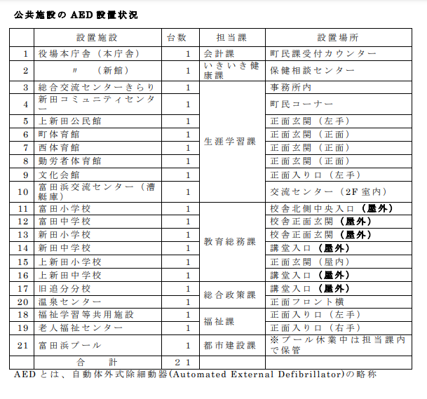